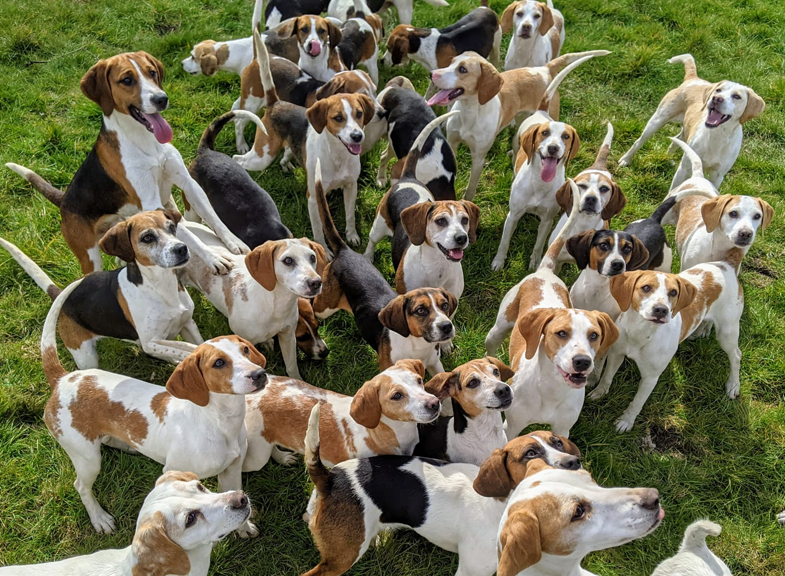

Benvenuto in PawPlace
Dove ogni zampa trova la sua famiglia
Chi siamo noi di PawPlace?
Ogni anno, migliaia di cani si ritrovano senza una casa, in attesa di qualcuno disposto a offrire loro una seconda possibilità. Il nostro obiettivo è creare un ponte tra questi animali e le persone pronte ad accoglierli, facilitando un’adozione consapevole, responsabile e duratura. Crediamo che ogni cane abbia una storia unica e meriti di continuare a viverla in un ambiente sicuro e pieno di affetto. Per questo lavoriamo con attenzione nella selezione, nella cura e nella presentazione degli animali, accompagnando adottanti e famiglie in ogni fase del percorso. Non si tratta solo di trovare una casa, ma di costruire un legame autentico, basato su fiducia, rispetto e amore reciproco.
Obiettivi & missione:
- Promuovere l’adozione responsabile e consapevole.
- Ridurre il numero di cani nei rifugi e nei canili.
- Garantire il benessere degli animali prima, durante e dopo l’adozione.
- Supportare le famiglie nella scelta del cane più adatto al loro stile di vita.
- Sensibilizzare sul tema dell’abbandono e del rispetto degli animali.
- Creare una comunità attiva di persone unite dall’amore per i cani.
